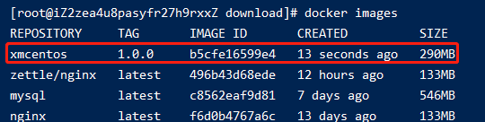

190-dockerFile实战1-自定义centos
1、编写dockerFile
编写dockerFile文件，文件名称命名为myCentosDockerFile
FROM centos
LABEL name="xiaoming custom centos"
LABEL buildDate="2021-01-26"
ENV WORKPATH=/home/
WORKDIR ${WORKPATH}
RUN yum -y install net-tools
RUN yum -y install vim
EXPOSE 80
CMD /bin/bash
2、执行docker build
执行命令: docker build -f ./myCentosDockerFile -t xmcentos:1.0.0 .
等待构建完执行docker images可以看到已经有该镜像了

执行docker run -it xmcentos:1.0.0就可以进入该镜像并且在镜像内执行net-tools和vim的相关方法了